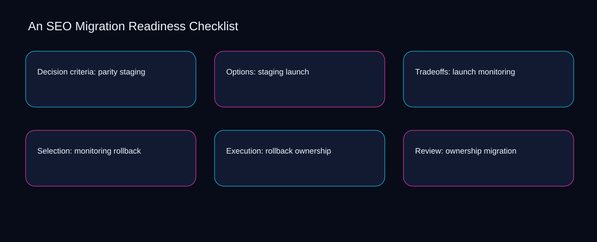

A workable seo migration readiness checklist flow moves from rollback to ownership, pauses for migration, and ends with a recorded decision. A bounded method for turning seo migration readiness checklist into an owned, reviewable operating practice. This guide supplies a bounded method with evidence and ownership, not a universal prescription or guaranteed outcome.
Decision criteria: parity staging
Place decision criteria: parity staging inside a bounded scenario involving rollback, ownership, and a named reviewer. Define the artifact, owner, acceptance condition, and excluded work. Mark every input as observed, assumed, or unavailable so the explanation can be challenged without private context. Inspect migration, redirect, inventory, parity, staging in the topic-specific walkthrough. An SEO Migration Readiness Checklist applies optimization roadmap to decision criteria; the scope memo records capacity-to-priority with exception-to-escalation. A priority remains provisional until rollback survives the ownership review.
Decision criteria: parity staging begins by separating redirect from inventory. Compare a normal path with an exception path. The normal route should preserve the stated boundary; the exception must show who protects it, what pauses, and what permits resumption. Inspect parity, staging, launch, monitoring, rollback in the topic-specific walkthrough. An SEO Migration Readiness Checklist applies optimization roadmap to decision criteria; the boundary map records capacity-to-priority with exception-to-escalation. Keep the rejected option beside redirect so another operator understands the inventory choice.
causal analysis checkpoint
A review of decision criteria: parity staging should expose staging, launch, and the decision they inform. Trace the causal chain from the first signal to the recorded outcome. Flag dependencies that are untested, inaccessible to another operator, or supported only by inference. Inspect monitoring, rollback, ownership, migration, redirect in the topic-specific walkthrough. An SEO Migration Readiness Checklist applies optimization roadmap to decision criteria; the observation log records capacity-to-priority with exception-to-escalation. Date the staging evidence and name who will verify launch.
Options: staging launch
Reopen options: staging launch whenever staging changes the accepted launch boundary. Ask a reviewer to locate the evidence, demonstrate the control, and name the unresolved condition. Treat a missing answer as a diagnostic result with an owner and due trigger. Inspect monitoring, rollback, ownership, migration, redirect in the topic-specific walkthrough. An SEO Migration Readiness Checklist applies optimization roadmap to options; the assumption register records capacity-to-priority with exception-to-escalation. The record closes when staging has an owner and launch has an observable trigger.
Use rollback as the entry condition for options: staging launch and ownership as its exit evidence. Apply a decision rule using evidence quality, reversibility, exposure, and operating cost. Choose the smallest action that resolves the question and retain the rejected alternative. Inspect migration, redirect, inventory, parity, staging in the topic-specific walkthrough. An SEO Migration Readiness Checklist applies optimization roadmap to options; the decision brief records capacity-to-priority with exception-to-escalation. If evidence breaks between rollback and ownership, return to diagnosis instead of polishing the artifact.
implementation instruction checkpoint
Place options: staging launch inside a bounded scenario involving redirect, inventory, and a named reviewer. Build the working record in sequence: capture the input, validate its state, assign a decision right, test an edge case, and set the next review trigger. Inspect parity, staging, launch, monitoring, rollback in the topic-specific walkthrough. An SEO Migration Readiness Checklist applies optimization roadmap to options; the implementation ticket records capacity-to-priority with exception-to-escalation. A priority remains provisional until redirect survives the inventory review.
Tradeoffs: launch monitoring
Tradeoffs: launch monitoring begins by separating redirect from inventory. Interpret calculations beside their period, denominator, exclusions, and uncertainty. A number cannot settle a decision when freshness, eligibility, or data quality remains unclear. Inspect parity, staging, launch, monitoring, rollback in the topic-specific walkthrough. An SEO Migration Readiness Checklist applies optimization roadmap to tradeoffs; the calculation sheet records capacity-to-priority with exception-to-escalation. Keep the rejected option beside redirect so another operator understands the inventory choice.
A review of tradeoffs: launch monitoring should expose staging, launch, and the decision they inform. Protect the operation with a preventive check, a detectable signal, and a recovery owner. Define the stop condition before the team encounters the exception. Inspect monitoring, rollback, ownership, migration, redirect in the topic-specific walkthrough. An SEO Migration Readiness Checklist applies optimization roadmap to tradeoffs; the control register records capacity-to-priority with exception-to-escalation. Date the staging evidence and name who will verify launch.
exception handling checkpoint
Reopen tradeoffs: launch monitoring whenever rollback changes the accepted ownership boundary. Document exceptions separately from defaults. Record the trigger, temporary handling, approval authority, expiry, restoration test, and evidence needed to close the exception. Inspect migration, redirect, inventory, parity, staging in the topic-specific walkthrough. An SEO Migration Readiness Checklist applies optimization roadmap to tradeoffs; the exception note records capacity-to-priority with exception-to-escalation. The record closes when rollback has an owner and ownership has an observable trigger.

Selection: monitoring rollback
Use redirect as the entry condition for selection: monitoring rollback and inventory as its exit evidence. Rank actions by decision value, dependency, reversibility, and effort. Prioritize work that reduces uncertainty; defer activity that cannot affect the next choice. Inspect parity, staging, launch, monitoring, rollback in the topic-specific walkthrough. An SEO Migration Readiness Checklist applies optimization roadmap to selection; the priority queue records capacity-to-priority with exception-to-escalation. If evidence breaks between redirect and inventory, return to diagnosis instead of polishing the artifact.
Place selection: monitoring rollback inside a bounded scenario involving staging, launch, and a named reviewer. Use each reference for a narrow claim function. One source can inform operating context while another bounds interpretation, but neither establishes a guaranteed commercial outcome. Inspect monitoring, rollback, ownership, migration, redirect in the topic-specific walkthrough. An SEO Migration Readiness Checklist applies optimization roadmap to selection; the source ledger records capacity-to-priority with exception-to-escalation. A priority remains provisional until staging survives the launch review.
measurement guidance checkpoint
Selection: monitoring rollback begins by separating rollback from ownership. Pair a leading signal with an outcome signal and a data-quality check. Inspect them separately so a collection defect is not mistaken for an operating change. Inspect migration, redirect, inventory, parity, staging in the topic-specific walkthrough. An SEO Migration Readiness Checklist applies optimization roadmap to selection; the measurement card records capacity-to-priority with exception-to-escalation. Keep the rejected option beside rollback so another operator understands the ownership choice.
Execution: rollback ownership
A review of execution: rollback ownership should expose redirect, inventory, and the decision they inform. Set cadence according to change risk rather than calendar habit. Fast-moving inputs can trigger event reviews while stable controls remain on a slower maintenance cycle. Inspect parity, staging, launch, monitoring, rollback in the topic-specific walkthrough. An SEO Migration Readiness Checklist applies optimization roadmap to execution; the cadence calendar records capacity-to-priority with exception-to-escalation. Date the redirect evidence and name who will verify inventory.
Reopen execution: rollback ownership whenever staging changes the accepted launch boundary. Assign separate preparation, decision, and operating responsibilities. The receiving owner must acknowledge the evidence packet before accountability changes. Inspect monitoring, rollback, ownership, migration, redirect in the topic-specific walkthrough. An SEO Migration Readiness Checklist applies optimization roadmap to execution; the ownership matrix records capacity-to-priority with exception-to-escalation. The record closes when staging has an owner and launch has an observable trigger.
escalation condition checkpoint
Use rollback as the entry condition for execution: rollback ownership and ownership as its exit evidence. Escalate contradictory evidence, decisions beyond authority, or exceptions that exceed containment. Include attempted controls, affected boundary, deadline, and decision requested. Inspect migration, redirect, inventory, parity, staging in the topic-specific walkthrough. An SEO Migration Readiness Checklist applies optimization roadmap to execution; the escalation packet records capacity-to-priority with exception-to-escalation. If evidence breaks between rollback and ownership, return to diagnosis instead of polishing the artifact.
Review: ownership migration
Place review: ownership migration inside a bounded scenario involving redirect, inventory, and a named reviewer. Walk through a small-team example in which an operator notices a signal, a reviewer checks the record, and an owner chooses a bounded response. Repeat with a failure path. Inspect parity, staging, launch, monitoring, rollback in the topic-specific walkthrough. An SEO Migration Readiness Checklist applies optimization roadmap to review; the scenario transcript records capacity-to-priority with exception-to-escalation. A priority remains provisional until redirect survives the inventory review.
Review: ownership migration begins by separating staging from launch. State the limitation directly. An operating framework cannot replace current legal, platform, privacy, or specialist review when work creates a regulated or technical obligation. Inspect monitoring, rollback, ownership, migration, redirect in the topic-specific walkthrough. An SEO Migration Readiness Checklist applies optimization roadmap to review; the limitation note records capacity-to-priority with exception-to-escalation. Keep the rejected option beside staging so another operator understands the launch choice.
tradeoff checkpoint
A review of review: ownership migration should expose rollback, ownership, and the decision they inform. Expose the tradeoff before acting. Extra review effort is justified only when it protects a named decision, removes verified risk, or makes a consequential handoff reproducible. Inspect migration, redirect, inventory, parity, staging in the topic-specific walkthrough. An SEO Migration Readiness Checklist applies optimization roadmap to review; the tradeoff record records capacity-to-priority with exception-to-escalation. Date the rollback evidence and name who will verify ownership.
Verification: migration redirect
Reopen verification: migration redirect whenever redirect changes the accepted inventory boundary. Reject artifact collection without decision use. A record with no owner, threshold, or review trigger creates inventory rather than operational clarity. Inspect parity, staging, launch, monitoring, rollback in the topic-specific walkthrough. An SEO Migration Readiness Checklist applies optimization roadmap to verification; the anti-pattern review records capacity-to-priority with exception-to-escalation. The record closes when redirect has an owner and inventory has an observable trigger.
Use staging as the entry condition for verification: migration redirect and launch as its exit evidence. Verify with a second operator who did not author the record. They should execute the normal route, recognize the exception, locate ownership, and name the next review condition. Inspect monitoring, rollback, ownership, migration, redirect in the topic-specific walkthrough. An SEO Migration Readiness Checklist applies optimization roadmap to verification; the verification receipt records capacity-to-priority with exception-to-escalation. If evidence breaks between staging and launch, return to diagnosis instead of polishing the artifact.
explanation checkpoint
Place verification: migration redirect inside a bounded scenario involving rollback, ownership, and a named reviewer. Reconcile the maintenance history against the current boundary. Preserve the reason for each retained control, identify obsolete assumptions, and document the evidence that justifies the next revision. Inspect migration, redirect, inventory, parity, staging in the topic-specific walkthrough. An SEO Migration Readiness Checklist applies optimization roadmap to verification; the dependency map records capacity-to-priority with exception-to-escalation. A priority remains provisional until rollback survives the ownership review.
Maintenance: redirect inventory
Maintenance: redirect inventory begins by separating rollback from ownership. Contrast the current operating state with the intended state. Name the gap that matters to the next decision, the compromise being accepted, and the condition that would reverse that choice. Inspect migration, redirect, inventory, parity, staging in the topic-specific walkthrough. An SEO Migration Readiness Checklist applies optimization roadmap to maintenance; the handoff acknowledgement records capacity-to-priority with exception-to-escalation. Keep the rejected option beside rollback so another operator understands the ownership choice.
A review of maintenance: redirect inventory should expose redirect, inventory, and the decision they inform. Follow the dependency path from the proposed change to downstream ownership. Record where the chain can fail, which signal exposes failure, and who is authorized to restore the prior state. Inspect parity, staging, launch, monitoring, rollback in the topic-specific walkthrough. An SEO Migration Readiness Checklist applies optimization roadmap to maintenance; the maintenance trigger records capacity-to-priority with exception-to-escalation. Date the redirect evidence and name who will verify inventory.
diagnostic prompt checkpoint
Reopen maintenance: redirect inventory whenever staging changes the accepted launch boundary. Run an end-state diagnostic with a fresh reviewer. Ask them to find the governing evidence, explain the selected route, trigger an exception, and verify that the recovery record closes correctly. Inspect monitoring, rollback, ownership, migration, redirect in the topic-specific walkthrough. An SEO Migration Readiness Checklist applies optimization roadmap to maintenance; the change history records capacity-to-priority with exception-to-escalation. The record closes when staging has an owner and launch has an observable trigger.
Reference boundaries
For An SEO Migration Readiness Checklist, this private guide uses SEO Starter Guide from Google Search Central and Consolidate duplicate URLs from Google Search Central as public reference anchors. The exception-to-escalation reading connects redirect, inventory, parity, staging; the baseline-to-gap boundary covers launch, monitoring, rollback, ownership, migration. Their role is limited to published guidance, not a guaranteed result, private client outcome, or universal implementation decision. Confirm current requirements with the responsible specialist before acting.
Close the operating loop
Keep seo migration readiness checklist operational by retaining staging, the launch owner, the monitoring exception, and the rollback review trigger. Preserve limitations and rejected options for the next reviewer. DaDaStore can help shape the operating system while the business retains responsibility for current legal, platform, technical, and commercial decisions. The B-seo-3 handoff records redirect, inventory, parity, staging, launch, monitoring, rollback, ownership, migration as topic-specific review inputs.